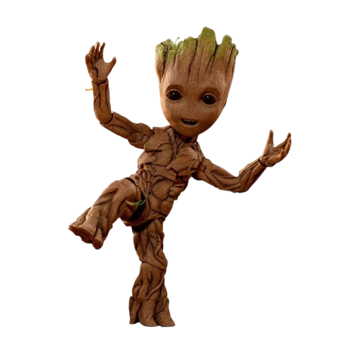

Groot é um ser alienígena da espécie Flora colossus, originário do Planeta X.
Apesar de sua aparência imponente e de falar apenas a frase “Eu sou Groot”,
ele é extremamente inteligente, sensível e leal. Sua forma de comunicação limitada
esconde uma personalidade complexa, que só é totalmente compreendida por aqueles
que convivem com ele, como seu melhor amigo e parceiro inseparável, Rocket Raccoon.

No início de sua jornada, Groot e Rocket atuavam como caçadores de recompensas pela galáxia, vivendo de missões perigosas e interesses próprios. Tudo muda quando eles cruzam o caminho de Peter Quill, também conhecido como Senhor das Estrelas, e acabam formando um grupo improvável ao lado de Gamora e Drax the Destroyer. Juntos, eles se tornam os Guardiões da Galáxia.